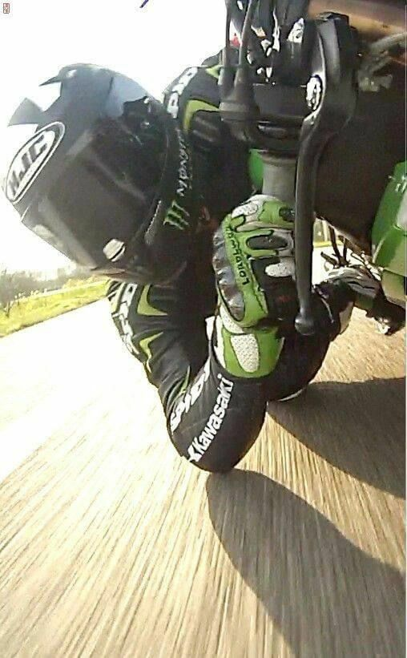
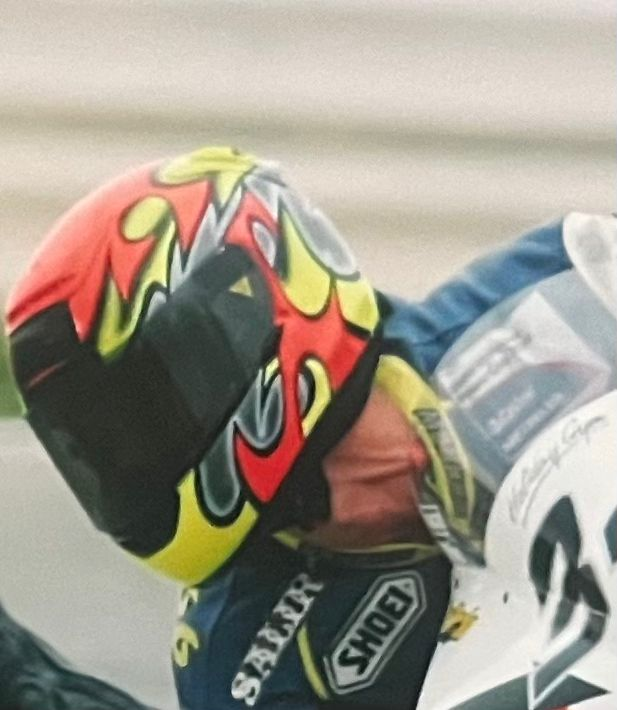
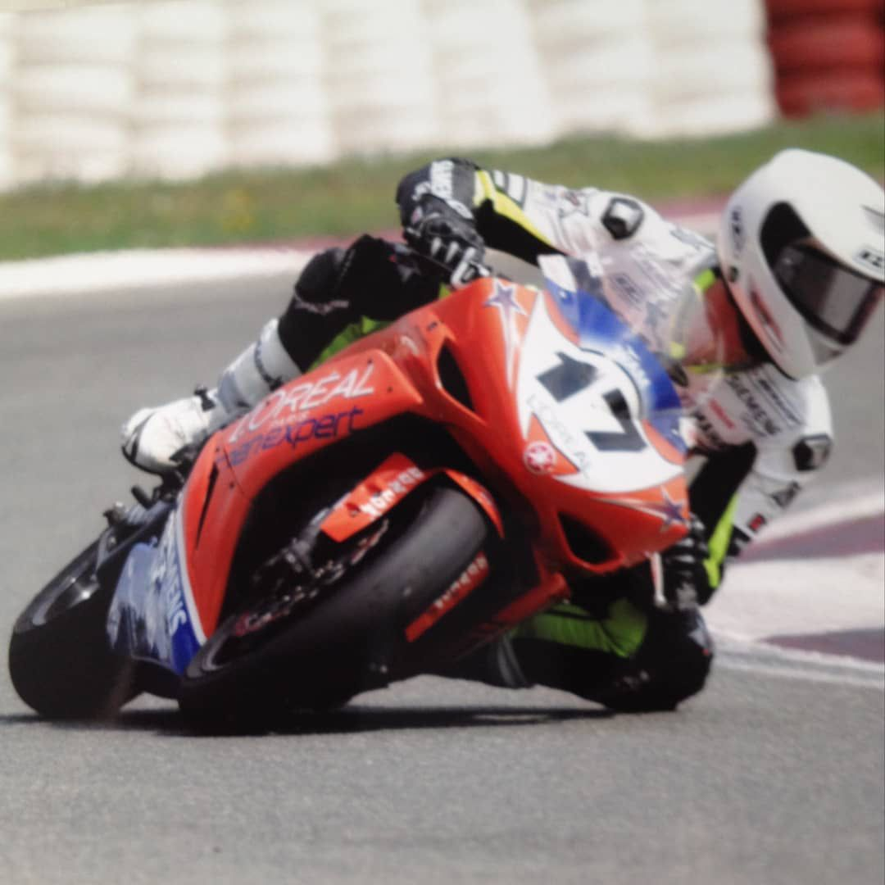
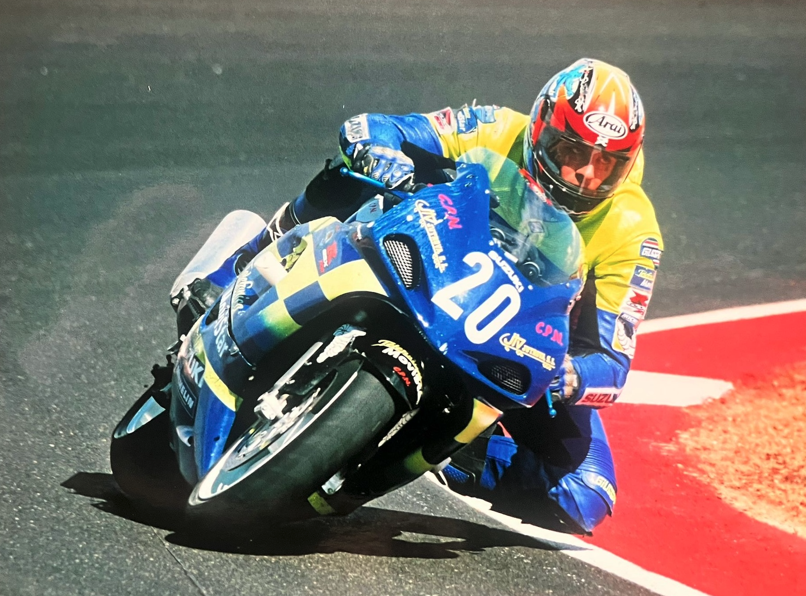
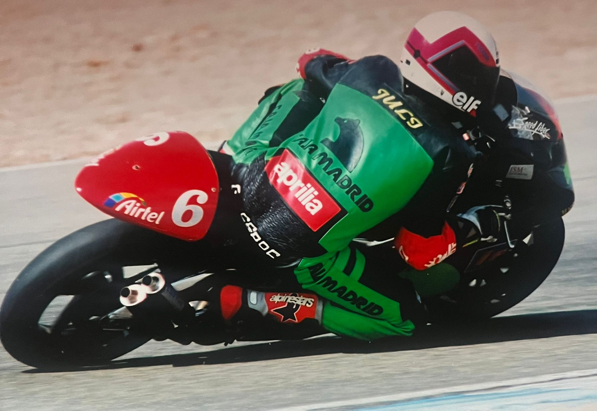
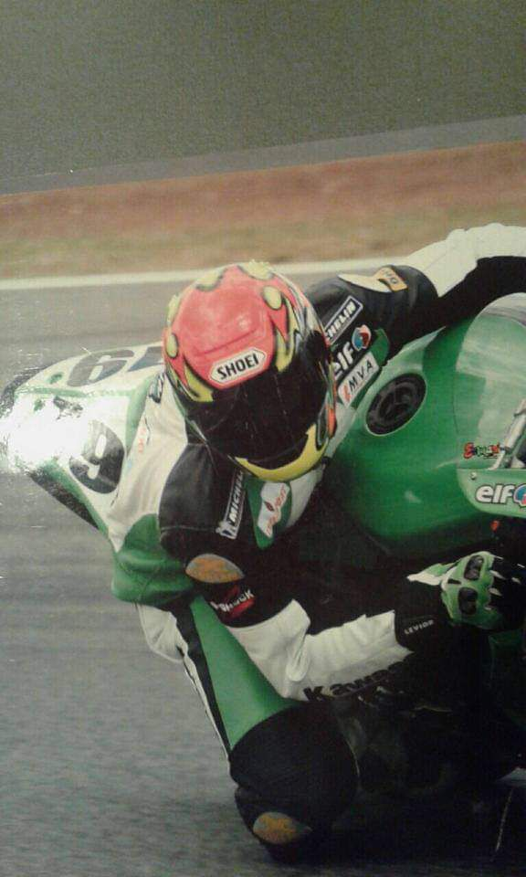
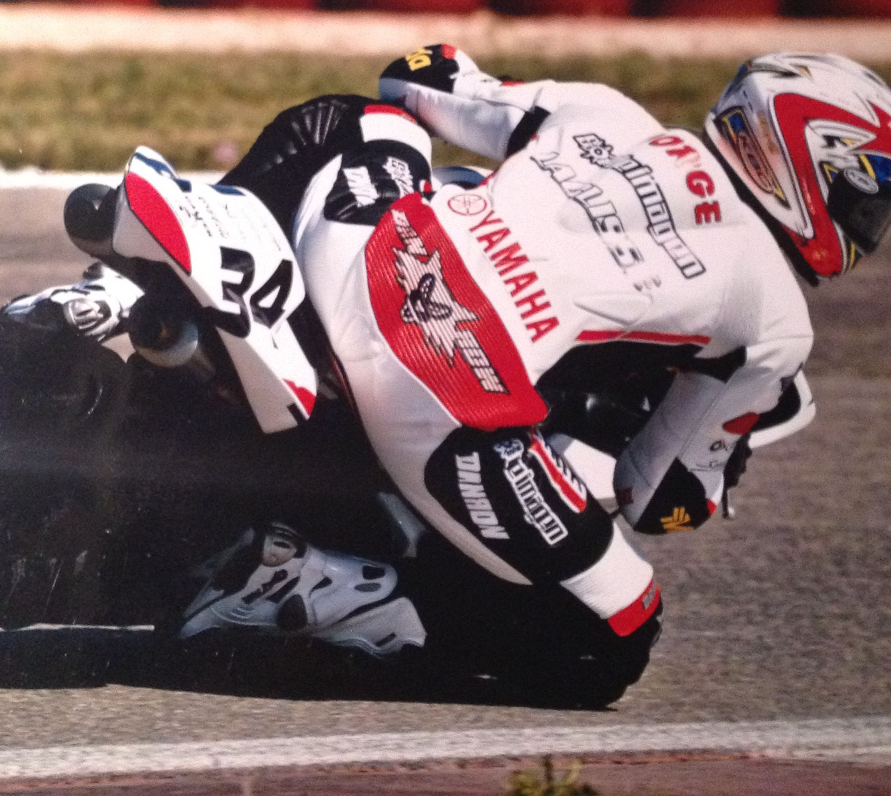
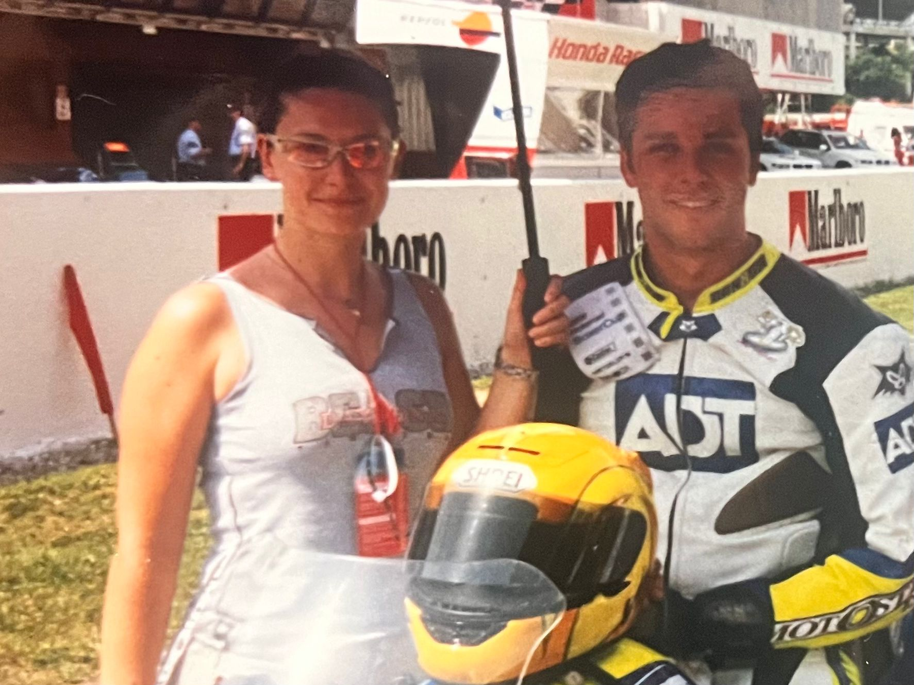
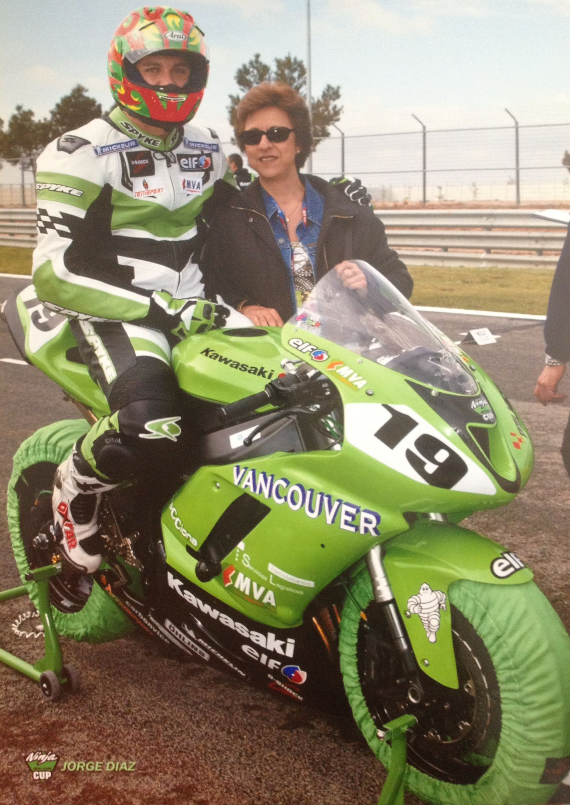
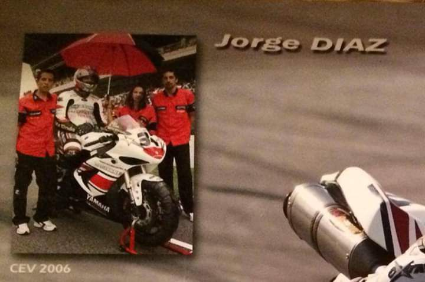

Recibiste un diagnóstico que te cambió todo.
O acompañás a alguien que amás. Tenés el tratamiento médico. Lo que te falta es el lado del alma.
Incubadora Consciente · Comunidad privada en Skool
Y de vuelta para enseñarte a vivir sin que el miedo a la muerte condicione tu vida.
Una comunidad viva. Cada semana entrenamos la metodología, los audios y las prácticas que me trajeron de vuelta de la muerte clínica para reprogramar tu mente, tu cuerpo y tu destino.

01 — Coherencia
Cada audio, cada entrenamiento, cada meditación es una guía precisa. Para que dejes de juntar piezas sueltas y empieces a construir desde la coherencia.

02 — Activación
Meditaciones diseñadas para activar tu glándula pineal y reprogramar tu codificación inconsciente. Las mismas que usé para volver a caminar contra todo pronóstico.

03 — Frecuencia
Un espacio sin presión dentro de tu semana. No hay que ponerse al día. Hay que entrenar el músculo invisible que crea lo que sí se ve.
A las 3 AM, en el auto, en una cena. "Y después de morir, ¿qué?"
Nadie en tu vida sabe responderlo de verdad. Los médicos te hablan del cuerpo. Los curas te hablan de la fe. Los terapeutas cambian de tema.
Yo estuve clínicamente muerto 4 minutos. 8 meses inválido de cintura para abajo. 4 de 5 cirujanos me dijeron que no volvería a caminar. Me dieron 1 entre 10.000.
Volví a caminar. Volví a subirme a una moto. Y gané una carrera.
No porque sea especial. Porque decodifiqué el patrón.

Cambia cuando aprendes a escuchar mejor.
Cambia cuando alguien te muestra el sistema que opera detrás de la realidad que ves.
Cambia cuando la DISCIPLINA deja de ser castigo y se convierte en frecuencia.
Eso es lo que vas a encontrar dentro de la Incubadora Consciente.
Recibiste un diagnóstico que te cambió todo.
O acompañás a alguien que amás. Tenés el tratamiento médico. Lo que te falta es el lado del alma.
Lograste lo que te proponías. Y descubriste que no era eso.
La pregunta a las 3 AM no la responde ningún MBA. Por fuera funcionás. Por dentro hay algo que no se va.
Tenés 25, 30, 35 años y la pregunta "¿y después qué?" aparece donde antes había liviandad.
No estás roto. Estás despierto antes que la mayoría. Y los referentes adultos no tienen respuestas.
No es para vos si…
Lo que estudié durante los 8 meses en cama. Lo que apliqué para volver a caminar. Lo que hoy enseño cada semana.
El punto de partida. Identificás y desactivás los patrones que te mantienen en modo supervivencia. Sin esto, todo lo demás es estructura sobre arena.
Cómo opera tu cerebro. La diferencia entre lo que decidís cada mañana y lo que tu subconsciente repite en piloto automático. Neurociencia aplicada, sin lenguaje de laboratorio.
Tus pensamientos, tus emociones y tu entorno modifican la expresión de tus genes. No estás condenado por tu biología. La ciencia lo demuestra. Acá lo entrenamos.
El estado de sueño como herramienta de reprogramación y sanación. Acceso a estados de conciencia donde lo inconsciente se vuelve maleable. Lo que la voluntad no puede, esto sí.
La integración final. Leyes universales explicadas desde la física cuántica — no desde el pensamiento mágico. Conexión con algo mayor. Propósito. Sentido frente a lo desconocido.
Videos del método organizados por pilar · meditaciones guiadas por Jorge · herramientas prácticas para cada día.
Quiero entrar a la Incubadora
Tu cuerpo deja de operar en modo supervivencia. Se activa el nervio vago. Tu cerebro recibe la señal de que estás a salvo. Ahí, y solo ahí, empieza la reprogramación real.

Es el órgano que la ciencia y la espiritualidad llaman el tercer ojo. Cuando se activa, accedes a estados de conciencia donde lo inconsciente se vuelve maleable. Y lo que no podías cambiar con voluntad, empieza a moverse solo.

Aquí ocurre. Donde las viejas creencias dejan de repetirse y las nuevas se instalan. Esto no es teoría. Es lo que me devolvió el movimiento, la salud y la vida.
El método Incubadora Consciente fue fundamental en mi recuperación del cáncer de páncreas. La meditación y el asesoramiento de Jorge me dieron herramientas valiosas para mi salud.
Esta metodología ha sido invaluable en mi trabajo en MotoGP. Mejoró nuestro desempeño y la cohesión como equipo.
Con Incubadora Consciente comprendí en profundidad muchos conceptos que creía conocer. La claridad y el orden son lo más valioso del aprendizaje.
A mis 70 años he comprendido conceptos de física, ciencia y espiritualidad que nunca imaginé aplicar. Esta metodología transformó mi forma de ver la vida.



Fui piloto. Hoy guío a campeones fuera de la pista.
Entre 1995 y 2015 corrí en CEV, BMW Boxer Cup europea, Ninja Cup y campeonatos nacionales. Sobre Suzuki, Yamaha, Aprilia y Kawasaki.
A los 26 años, un accidente en carrera me dejó con la médula parcialmente seccionada y una muerte clínica de 4 minutos. Estuve 8 meses inválido de cintura para abajo. 4 de 5 cirujanos le dijeron a mi familia que no volvería a caminar. Me dieron 1 entre 10.000.
Conseguí volver a caminar, volverme a subir a una moto y ganar una carrera.
Lo que viví del otro lado del umbral es lo que vengo a compartirte. Hoy también:
"Muchos son los llamados, pero pocos los elegidos."
Si llegaste hasta acá, ya sabés por qué.
La Incubadora
Consciente.
Pago único · Acceso completo al método
Una sola puerta de entrada. Conocé el resto del lado de adentro.
Pago seguro vía Stripe · Acceso inmediato · Sin permanencia
Procesado por Skool y Stripe. Encriptación SSL.
Tras la compra entrás directo a la comunidad.
Por cada nuevo miembro. Movimiento 1%.
En cuanto completás el pago. La comunidad vive en Skool — una plataforma online con app móvil. Accedés desde cualquier dispositivo, a cualquier hora.
Los videos del método organizados en los 5 pilares, meditaciones guiadas por mí, una clase en vivo conmigo cada mes, la comunidad activa y el soporte del equipo. Todo a tu ritmo.
Un único pago. Pagás una vez y entrás. Sin cuotas, sin renovaciones, sin letra chica. El valor exacto lo ves del lado de adentro, en Skool.
Si sentís que no es para vos, escribime. No hay letra chica.
Para los dos. Los 5 pilares están diseñados para que avances a tu ritmo. Hay personas de 20 años y de 70 años adentro. Lo que compartimos es la búsqueda, no el nivel.
Skool. Funciona en web y tiene app para iOS y Android. Es intuitiva, privada y sin algoritmos.
Tarjeta de crédito o débito internacional, procesado por Stripe a través de Skool.
Sí, llega automáticamente por email después del pago. Si necesitás datos fiscales específicos, escribime y la emito a medida.
No. Esto es un complemento. Si estás en tratamiento médico o psicológico, seguí con tu profesional. Lo que entrenamos acá es la mente, las creencias y la relación con lo desconocido.
“Muchos son los llamados, pero pocos los elegidos.”
La pregunta no es si la metodología funciona — funciona. La pregunta es:
¿estás listo para dejar de ser espectador de tu propia vida?
Nos vemos dentro.
— Jorge.